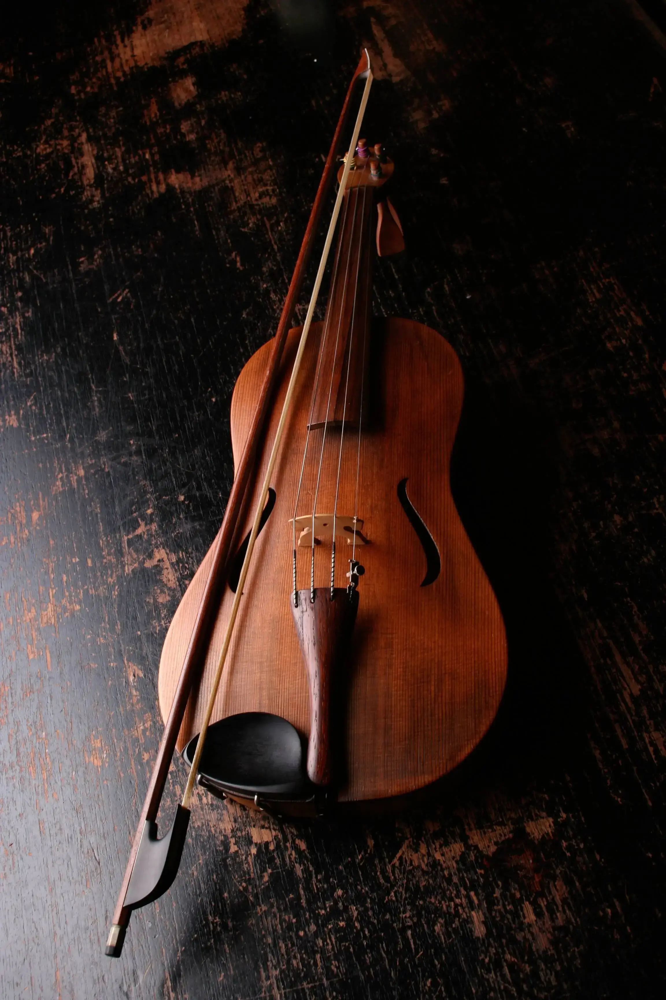

Facts about classical music
Studies show that listening to classical music can reduce blood pressure and can
help you sleep better.
Listening to classical music has been shown to increase brain wave activity and
memory functions.
Some scientists suggest that the tempo in classical music is similar to that of
the human heart.
Listening to classical music can reduce the amount of pain relievers and has been
historically used to treat pain.
Exposure to classical music has been documented to help develop language skills,
reasoning and spatial intelligence.

Listening to classical music can help alleviate depression.